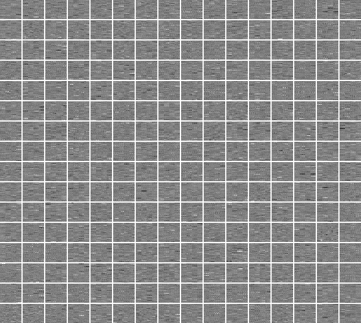

The idea in one minute
In November 2026, Takehi, Teoh, Zhang and Khattab at MIT CSAIL published Sparks of Weight-Space Programming. Their claim is that a general-purpose language model can read, repair and write the weights of a neural network directly, guided by a goal stated in plain language. In their strongest experiment the model writes a whole game-playing network that works with no training at all.
Their tasks are games and control problems. My field is remote sensing, where the useful knowledge is physical: how water, forest and concrete reflect light. So I asked a narrower question. Does a language model know enough about the Earth's surface to write a satellite-image classifier by hand?
Part 1
Writing a classifier without data
The task
EuroSAT is a standard benchmark: small patches from the Sentinel-2 satellite, 64 by 64 pixels, each showing one of ten kinds of land cover. Every pixel is measured in 13 spectral bands, most of them invisible to the eye.
The rules
- The model. Claude Fable 5.2 in an ordinary chat window, with code execution, web search and memory switched off.
- What it gets. The ten class names, the list of spectral bands and the layout of a small network.
- What it returns. A short function that fills in every weight using arithmetic only. It cannot open a file, see an image or run the network.
- How it is scored. I run the function and test the resulting network on 5,400 images the model never sees. No training step exists anywhere.
- Feedback. Up to three times, the model is told how its network did on 1,000 separate practice images, and may revise.
- Decided in advance. The design, the reference scores and what would count as success were written down before the first attempt.
What it wrote
The model did not produce mysterious numbers. It wrote a small, readable program in weights: detectors for individual bands, for water, vegetation and bare ground, and for texture, followed by a rule that compares each image with its idea of what each class looks like. You can run that network here, in your browser, on real test images.
How well it works
The first version, written with no feedback at all, scores 51.8%. After three rounds of feedback it reaches 59.5%. Three reference points give that number a meaning.
- 11.3% is what you get by always answering the most common class.
- 48.6% is a simple classifier that does use data: it learns the average spectrum of each class from 16,199 labelled training images.
- 81.5% is the same small network trained in the usual way.
So a network written from knowledge alone beats a simple classifier fitted on real data, and gets 73% of the way to what full training achieves. Feedback helped once (+7.3 points), then stopped helping (+1.4, then −0.9).
Where its knowledge was right, and where it ran out
The model's code contains a table of what it believes each class looks like in each band. I compared that table with the real averages, measured on the training images it never saw.
Its memory of the spectra was close: across all classes and bands the two agree with a correlation of 0.98, and the typical error is 1.2 reflectance points. The spectral knowledge was there from the first attempt. What it lacked shows up when the results are split by class.
Classes defined by what the surface is made of are nearly solved: sea and lake 99%, forest 96%, river 83%. Classes defined by how things are arranged are not: highway 27%, residential 41%, industrial 53%. A highway and a housing block are made of similar materials. Telling them apart takes spatial patterns, and three rounds of feedback only moved errors from one built-up class to another.
Two smaller versions of the same experiment
Numbers typed one by one. In a first test the model wrote a 618-weight network for ordinary red, green and blue images as a plain list of numbers, in a single reply. It scored 49.4%. The same network trained normally reaches 62.9%.
Colour images only. With red, green and blue instead of 13 bands, the written network went from 40.3% to 49.2% over three rounds (use the switch in the chart above). The trained version reaches 78.7%.
More bands help everyone. The extra bands lift the simple data-fitted classifier too, from 30.4% to 48.6%. The written network's lead over it is actually smaller with 13 bands (+10.9 points) than with colour only (+18.8). Part of the higher score comes from the data being easier, not from the model knowing more.
Part 2
Is a written network a better place to start training?
Nobody would deploy a classifier that is right 59.5% of the time. A more practical question is whether the written network is a good starting point. Training normally begins from random numbers (the standard recipe is called Kaiming initialisation). I trained the same network from three starting points, with all the labelled images, with a tenth of them and with a hundredth.
Starting from the model's network, with one correction explained below, beat the random start in every single run: +3.8 points with 163 labelled images, +6.8 with 1,620, and +3.6 with all 16,199. The knowledge written into the weights is still worth something after gradient descent has done its work.
The catch: the network was too sure of itself
Used exactly as written, the same network is an unreliable start. Some runs do well and others stall: with a tenth of the labels, 2 of 3 runs ended where they began. The cause is scale. The model wrote weights as large as 6,000 into the last layer, where a standard start uses values near 0.1. The class scores end up hundreds of units apart, so the network is more than 99% sure of its answer on 46% of the test images, whether it is right or wrong.
Dividing the last layer by a single constant, 72, changes no prediction and leaves the network with graded confidence that training can adjust. The share of test images on which it is more than 99% sure falls to 0%. That is the "rescaled" version in the chart above.
Part 3
The pilot: reading and repairing weights
The day before, I had run a first pilot with the previous model, Claude Fable 5.1, working inside a coding environment with Python available. That is weaker evidence than Part 1, because the model could compute on the weights instead of reasoning about them unaided. It is still the clearest view I have of how the model thinks about weights, because it kept notes as it worked and wrote down a prediction before each score was revealed.
Read: how was this network trained?
I trained nine small networks on EuroSAT in three ways: with no image augmentation, with standard augmentation and with strong augmentation. The model received their weights under anonymous names and had to say which was which, without running any of them.
It labelled 9 of 9 correctly. The limit: my nine networks shared three random seeds, and the model used that structure to turn one hard problem into three easy ones. It also chose among three named options, which is easier than an open question. A stricter version, with no tools and no shared seeds, has not been run.
Repair: fixing a damaged network without data
I took a larger network (ResNet-18, 98.2% accurate) and drowned 32 of the 256 filters in one layer in random noise. Accuracy fell to 57.7%. The model had to repair the layer from the damaged numbers alone, with no images and no access to the original.

The repaired network scores 95.5%. Before crediting the model with that, compare it with simpler repairs that I ran afterwards.
Simply switching the damaged filters off gives 94.1%, so the model's choice of replacement adds only +1.4 points. Its real contribution was the diagnosis: finding the damage, showing that nothing could be recovered, and refusing the low-rank method suggested in the prompt, which makes the network worse (45.8%). It was also wrong about one thing. It argued that rescaling the noisy filters would be worse than switching them off, and the reference runs show the opposite (95.3%).
Write, the small version: a first layer by hand
In the pilot's writing task, the model wrote only the first layer of a network, 432 weights out of 98,954, and the whole network was then trained as usual.
The hand-written layer finished at 90.81% on average against 90.35% for a random one, ahead by 0.1 to 0.7 points in each of three runs. That is too small and too few runs to call an effect, and because training followed, it says little about writing weights. It is the reason I went on to run Part 1.
What I take from this
| What the experiments support | What limits it |
|---|---|
| A language model can write a working land-cover classifier from knowledge alone: 59.5%, above a simple classifier fitted on real data (48.6%). | A tiny network, one dataset, one model, one run. The model already knows the dataset by reputation. Training still wins clearly (81.5%). |
| Its knowledge is spectral, not spatial. It knows what surfaces are made of, not how towns and roads are laid out. | The network is very small, which also limits spatial reasoning. A larger design might do better. |
| Written weights are a useful starting point: better than a random start at every label budget, in every run. | Only after a rescaling that I applied. Three runs per setting. |
| Given tools, the model analyses weights like a careful colleague: it checks for confounds, rejects bad suggestions and predicts before it scores. | The pilot tasks were easier than the MIT ones, and one of its arguments turned out to be wrong. |
How this relates to the MIT study
This is not a replication. Part 1 tests the MIT writing claim in their own terms (whole network, no tools, no training) on a new kind of data, at a much smaller scale. Part 3 allowed tools and used easier tasks, so it is only comparable with their tool-assisted experiments. The reading and repair claims have not been tested here without tools. A point-by-point comparison is in the repository.
What I would do next
- Run the reading and repair tasks with no tools, and with a network that behaves wrongly instead of one with noise added.
- Give the model a network large enough to describe spatial layout, and see whether the built-up classes improve.
- Repeat each experiment several times and with other models, to separate ability from luck.
- Try sensors with less written about them, such as radar, where the model can rely less on memory.
Reproduce it
All code, prompts, model replies, logs and result files are in the repository. The page's data is generated by one script, site/build_data.py, and site/test.mjs checks that the network running in your browser matches PyTorch and that every number in this text matches the result files.
References
- R. Takehi, J. Teoh, A. Zhang, O. Khattab. Sparks of Weight-Space Programming. MIT CSAIL, November 2026.
- P. Helber, B. Bischke, A. Dengel, D. Borth. EuroSAT: A Novel Dataset and Deep Learning Benchmark for Land Use and Land Cover Classification. IEEE JSTARS, 2019.
- K. He, X. Zhang, S. Ren, J. Sun. Delving Deep into Rectifiers. ICCV, 2015.
Contains modified Copernicus Sentinel data.